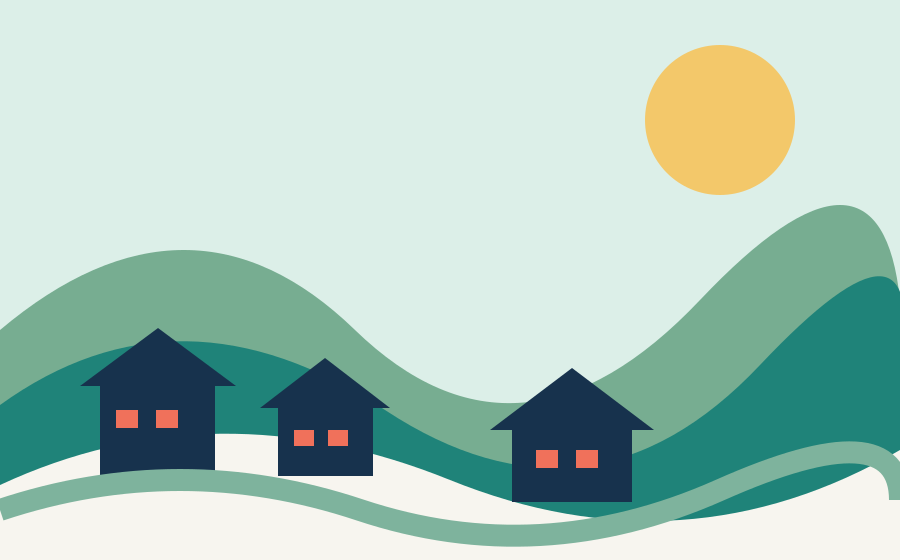
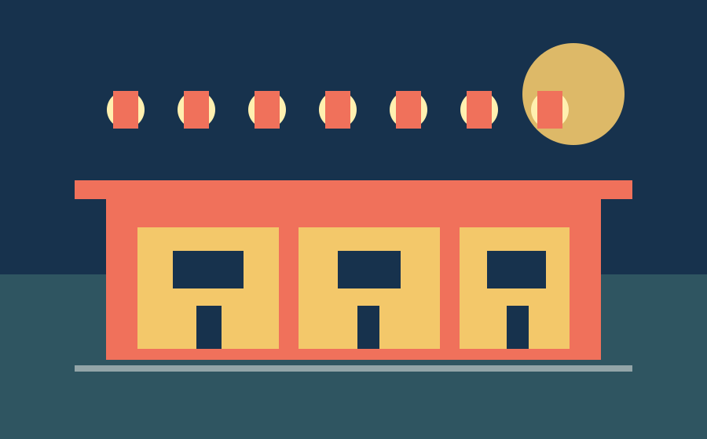
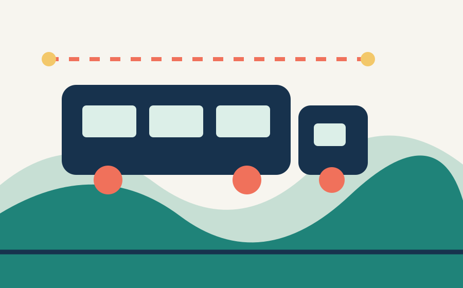

Old streets · North
Dadaocheng
Tea houses, heritage shopfronts, river breezes, and a golden-hour walk along Dihua Street.
Slow afternoonFour good starting points
Each stop has a different tempo. Mix two in one day or give one place the whole afternoon.
The short list
The grid is intentionally simple: choose a feeling before you choose a route.

Old streets · North
Tea houses, heritage shopfronts, river breezes, and a golden-hour walk along Dihua Street.
Slow afternoon
Food · East
Follow the lanterns for pepper buns, herbal soup, fruit tea, and the city's best late-night energy.
Come hungry
Views · South
Take the gondola up for tea, green hills, and a wide city view that makes time feel slower.
Breathe out
City lights · Centre
Pair a skyline walk with a bookstore, a small gallery, or a view from the foot of Taipei 101.
Big city moodA quick comparison
Taipei's best weekend trick is how quickly the mood can change between stops.
Use these stops in a plan| From | To | Suggested ride |
|---|---|---|
| Dadaocheng | Raohe | Green line + walk |
| Raohe | Xinyi | Walk or short bus |
| Xinyi | Maokong | Brown line + gondola |
| Maokong | Dadaocheng | Brown line + red line |